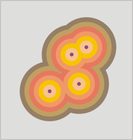

Buffer zones
This tool creates a new shapefile polygon layer with an adjustable number of concentric buffer zones around each feature in the input layer.
Input layer features can have any geometry type (point, line or polygon). For each input feature, one or more concentric and equidistant buffer zones will be created. If the input geometries are of type polygon, buffers can be internal, external or both.
For correct area statistics, overlapping buffer zones must be merged into a single feature.
